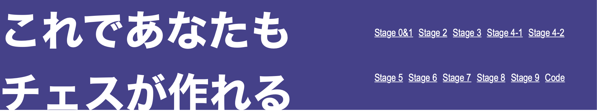
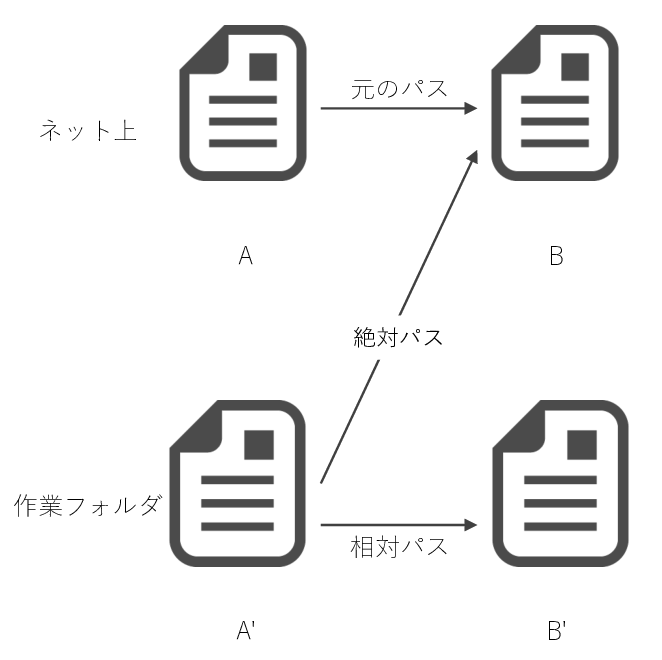
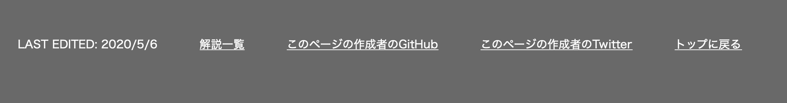

Stage 2 文章のレイアウトを考える
今回いじるのは「これであなたもサイトが作れる」のトップページ(Stage 0&1)と Stage 2 の 2 つの HTML ファイルです。お手元にご用意していただき、この解説と一緒にご覧ください。
目次
2-1 head のコーディング
HTML ファイルで最初に書く head の部分、これは大体テンプレになっています。テキストエディタによっては "doc" と入力して tab キーを押すだけでテンプレを書き上げてくれたりします。なお、私のコードには Google 先生にサイトを認識してもらうためのタグなんかが入っていますので、丸写しはダメですよ。それと title タグだけはしっかり考えましょう。title の中身はブラウザのこういうところに現れるんでしたね。

それにこういうところにも。

ですからここの名前は手を抜けません。一方で私のサイトのタイトル「これであなたもサイトが作れる」はこれ以上抜き差しならない文章になっていると思いますので、これをそのまま title タグの中に入れてしまいます。大概において head タグの title とサイトのタイトルは、要求される性質が
- 短い
- 内容がわかる
と共通していますから、同じものを使ってもいいと思います。
加えて、もし html の後に lang="en" と書いてあったら lang="ja" に直してください。「このページでは日本語を使いますよ」という意味です。実際なくてもまったく問題はありません。Google が公式に「こんなものはみていない」と発表しているなんて話もあるくらいです。ちなみに初期設定では en となっていることがほとんどだと思いますが、お察しの通り英語 English の頭文字です。
2-2 ヘッダー
ヘッダーとはこの部分です。
これはチェスのコードを解説したサイトから引っ張ってきたのですが、やることはこれと同じで、
- サイトのタイトル
- サイトのリンク
を入れます。またスマホなどの小さい画面で見る人のためにリンクは後々消せるようにしておきたいとも思っています。今時スマホ対応してないサイトなんてほぼ価値がないも同然ですから、レスポンシブデザイン(端末に応じて変わるデザイン)には気を配っておかないといけませんね。
では早速コーディングしていきましょうか。ここで div タグを使うのはあまりセンスがよろしくなくて、HTML には header というタグが用意されています。ということでまず body 内部に header タグを用意します。
さらにその中にヘッダーに入れる文字情報を書いていきます。タイトルはタイトルで、リンクはリンクで分けておきましょう。まずはタイトルを作ります。div タグを用意し id 属性を titile とします。id はタグの名前のようなもので、1 ページにつき 1 つしか指定できません。ここで title タグを使ってはいけませんよ。title はあくまで head の中に書くものです。なんでこんなこというかというと、私がやらかしたからです。
次のリンクはリスト形式で表示したいので、ul を使います。ul は順番のないリストに使うタグでしたね。一方順番が欲しいときは ol を使います。今回サイトに順番はありますけれども、ol を使うほどではないかなと。
リストの各要素は li で括ります。現在私のリンクは絶対パス(https:// から始まるアドレス)になっていますが、制作段階では相対パスが好ましいでしょう。こういうのを想像してみてください。ある程度作業が進んで「ちゃんと出来上がっているかな」とテストをするとします。そうしてブラウザなどで HTML ファイルを開き、実際にリンクをクリックしてみたくなったとしましょう。このとき絶対パスでリンクを設定していると、ネット上にアップロードされているウェブサイトにジャンプしてしまいます。この何が問題かと申しますと、リンクで飛ばされた先は編集前のサイトになっているわけです。
上の例で申しますと、すでにネットに上がっているのが A と B です。これを修正しようと作業ファイルで編集を加えたのがそれぞれ A' と B' になります。相対パスならその名の通りフォルダの中の相対位置からリンクを辿っていきますから、ネットであれ作業フォルダであれ同じようにお望みのファイルへたどり着くことができます。ということで、リンクの href には相対パスを入れましょう。
2-3 メイン部分
途中 acd-menu とか書いてるところがありますが、そこは Stage 4 で扱いますので飛ばしてください。ここで我々が手をつけるのはその下、main の部分です。文字通りこのページの根幹をなす部分となります。
このサイトの一番の目的はコードの解説です。現にやってるでしょ。で、解説するのにどういうのがあったらいいかを考えます。「Stage 2 以降は量が多いからパートに分けたほうがいいかな」とか「パートに分けたらそのタイトルは必要になるよね」とか「パートに分かれたら目次が最初にあったほうがわかりやすいんじゃない」とか「イントロは欲しいな」とか。これをもとに
- Stage 2 以降は小パートに分ける
- 各項目にタイトルをつける
- ページ冒頭にイントロと目次をつける
という基本のアウトラインができました。この小パートを section で担当します。
イントロはステージの顔となりますから、そのタイトルは最大の h1 タグが適切じゃないですか。で、ステージのイントロ以外は h2 タグで少し自重気味に見せてあげる。
目次はリンクにしてクリックしたらお望みの場所へ飛んで行けるようにしましょう。この考えをもとにして、各 section には目次から飛べるように id を振る必要があることがわかります。id 番号は "s(Stage 番号)-(section 番号)" とします。イントロに飛ぶ機会はありませんけれども、一応ここにも id をつけてあげましょうか。section 番号って柄でもないので Stage 1 なら s1, Stage 2 なら s2, ... という具合に。いずれも id は必ずアルファベットから始めるという命名規則がありますので、先頭の s をお忘れなく。
各 section でタイトルをつけ終わったら本文に入ります。この長さの文章を一段落で続けて読むのはかなり体力を使います。ただでさえ自分のわからないプログラミングのスキルの話が、長くて休みもないなんて、地獄でしょ。段落分けは必須ですね。段落は p タグで囲うことで表せます。私のコードをご覧ください。p タグだらけでしょう？
説明の間に写真や図が欲しいななんて思ったりするじゃないですか。こんな長い文章読んでると、「そろそろかわいい絵が出てきてもいい頃なのにな」とか、人間誰しもそう思うものです。そんな時には img タグ。例えば「癒されるネコの写真が欲しい」と思ったら
<img src="アドレス" alt="UNAVAILABLE" width="90%" style="max-width: 400px;">
とするとほらこの通り。
さて、alt="UNAVAILABLE" と書いたのは訳がありまして、例えばユーザー側の都合で画像が表示されないなんて大惨事になってしまったとします。こんな時に画像の代わりに出してあげる文章が alt 属性の中身になります。この場合はネコの画像が表示できなくなったら "UNAVAILABLE" とブラウザに表示される仕組みになっているわけです。その後ろの width="90%" というのは、「幅を親要素の 90% の横幅に合わせる」という意味。ただ無造作に大きくなってもらっても困りますので、その後ろの style="max-width: 400px;" で最大幅を規定しています。
さて、今度は「リストを作って整理させたい」と思った場合を考えましょう。例えば
- ネズミ
- ウシ
- サル
- ...
って具合に、縦に並べて表現したいときってあるじゃないですか。もちろん順番がないときは ul タグで、順番が欲しいときは ol を使うのはみなさんすでにご存知だと思います。ですが私のコードでは単純に ul を使っているのではなく、一度外側に p タグを噛ませていますよね。これ、Stage 3 で種明かしできる内容なのですが、仮に p タグを使わなかったとするとリストの位置どりが厄介なんですよ。まあ Stage 3 を見ればわかります。
2-4 フッター
最後にフッターを片付けましょう。フッターって何かって？ページの一番下にあるこれですよ、これ。
画面の幅が小さい人はこう写っているでしょうね。
やっていることはリストの表示、ただそれだけです。一番上に編集した日付、その下に親ページであるこのページであったり GitHub や Twitter のリンク、そしてトップへ戻るリンクをつけます。アップデートにはリンク不要ですよ。ページのトップは記号 # で表されますので、リンクは href="#" とすれば結構です。
次回予告
これで文章は出来上がりました。ただご覧になればわかる通り、ものすごく味気ないですよね。「こんなもん人様に見せるもんじゃねえ」ってくらいに。そこで次回、ここに工夫を凝らして華やかなウェブサイトを作り上げようと思っています。css の出番です。
ただ、css って書くの面倒でしょ。入れ子構造が使えないから何遍も同じことを書かなくちゃいけない。そこで私がオススメするのは Sass というプログラミング言語です。こいつを使えば css をとても感覚的に書き上げることができます。css が分かっていれば理解できるようにしていますので、Sass について勉強する必要はありませんよ。
ただ、Sass ファイルを css に変換する手段は何かしらの方法で用意しておいてください。Sass ファイルだけあってもウェブサイトは綺麗にはなりませんから。「Sass css 変換」とかググればいくらでもヒットします。それだけはよろしくお願いします。